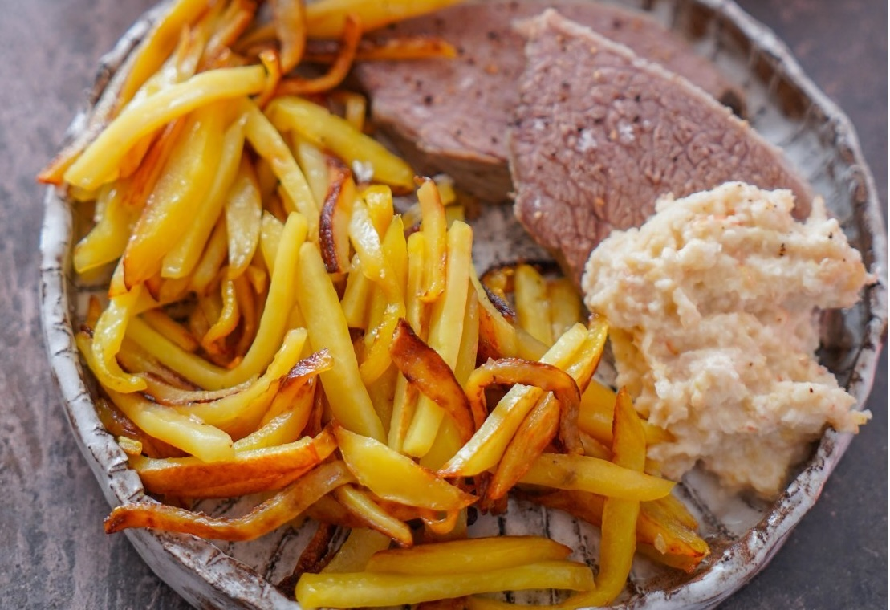

Казалось бы, очень простое по сути блюдо, вареное мясо с наваристым бульоном с обычными корнеплодами и различными гарнирами, такими как жареная картошка, шпинат в сливках и яблочный хрен. Но это тот самый случай, когда из немногих простых, но качественных ингредиентов при правильном приготовлении получается настоящий шедевр.
Название блюду дала та часть говяжьей туши, которая для него используется, кострец в переводе с немецкого. Блюдо по происхождению австрийское, но популярное и в Германии, во всяком случае, в мясных лавках всегда можно найти отруб под этим названием. Возможно, те, кто живет не в Австрии или Германии, напряглись, сомневаясь, что удастся найти тот самый отруб, но спешу вас заверить, что тафельшпиц можно готовить и со многими другими. В Австрии это блюдо поистине культовое, мне посчастливилось побывать в знаменитом венском ресторане Plachutta и отведать их потрясающе вкусный тафельшпиц.
Так вот, даже в этом ресторане его готовят из разных частей туши, и гость сам выбирает, какая для него предпочтительнее. Главное, что нужно помнить при выборе мяса для тафельшпица, — оно должно предназначаться для варки, то есть при щадящей медленной варке становиться очень мягким. Кроме костреца, это могут быть шея, ребра на кости, мясо с верхней части ноги, лопатка. Если вы живете в России, рекомендую поискать на рынке толстый край — он не слишком дорогой и прекрасно подойдет для этого блюда. Но не используйте ни в коем случае стейковые части и вырезку.
В оригинале для насыщенности вкуса мясо для тафельшпица варится в бульоне. Я предпочла приготовить более легкую версию и сварила его в воде. Если вам по душе первый вариант, можете либо сначала сварить бульон, либо добавить к мясу дополнительно куски бульонного мяса на кости или мозговую косточку — последняя не обязательна, но очень желательна. Кстати, после варки рекомендую извлечь горячий костный мозг, выложить на кусочек черного хлеба, посыпать крупной солью и с удовольствием съесть. Это очень вкусно, недаром французы называют костный мозг «фуа-гра для бедных». Если мозговую кость вы не найдете, положите для наваристости просто несколько косточек.
Шпинат можно использовать свежий или замороженный (у меня был второй вариант), но если выберете замороженный, то только цельный, листовой, а не измельченный.
Для более сложного вкуса рекомендую использовать несколько разных корнеплодов: морковь, корень пастернака и петрушки, а если последних двух не найдете, можно взять часть корня сельдерея, хотя он немного менее ароматный.